국내여행안내사-1차 (2017-11-04 기출문제)
1과목: 한국사
1. 다음 설명에 해당하는 것은?
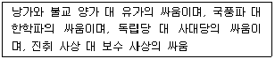
- 서경천도운동
- 이자겸의 난
- 만적의 난
- 무신 정변
(정답률: 97%)

2. 고려의 경제 정책에 관한 설명으로 옳은 것은?
- 토지 대장인 양안과 호구 장부인 호적을 작성하였다.
- 시장을 감독하는 관청인 동시전을 설치하였다.
- 농사직설 등 농서를 간행, 보급하였다.
- 상평통보가 발행되어 널리 유통되었다.
(정답률: 69%)
3. 고려시대 유학에 관한 설명으로 옳지 않은 것은?
- 지방에 향교를 설립하여 유학을 가르쳤다.
- 최충은 9재 학당을 세워 유학교육에 힘썼다.
- 유교 예법에 따라 의례를 정리한 국조오례의가 편찬되었다.
- 성리학을 수용하여 권문세족의 횡포와 불교의 폐단을 비판하였다.
(정답률: 82%)
4. 다음 중 가장 먼저 세운 비는?
- 창녕비
- 황초령비
- 마운령비
- 단양 적성비
(정답률: 77%)
5. 다음 중앙 관제가 존재한 국가에 관한 설명으로 옳지 않은 것은?
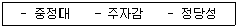
- 고구려 계승 의식을 갖고 있었다.
- 전국을 9주 5소경 체제로 정비하였다.
- 인안, 대흥 등의 독자적 연호를 사용하였다.
- 영주도, 신라도, 거란도 등 교통로가 존재하였다.
(정답률: 92%)
6. 다음 법이 있었던 국가에 관한 설명으로 옳은 것은?
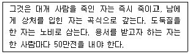
- 여러 가가 사출도를 나누어 다스렸다.
- 혼인 풍습으로 민며느리제가 존재하였다.
- 천군이 소도라는 신성 지역을 다스렸다.
- 건국과 관련하여 단군신화가 전해지고 있다.
(정답률: 90%)
7. 신라 불교에 관한 설명으로 옳지 않은 것은?
- 원효는 일심사상의 이론적 체계를 마련하였다.
- 의상은 화엄사상을 바탕으로 교단을 형성하였다.
- 혜심은 유불일치설을 주장하고 심성 도야를 강조하였다.
- 혜초는 인도에서 불교를 공부하고 왕오천축국전을 서술하였다.
(정답률: 83%)
8. 다음과 같은 폐단을 시정하기 위해 시행된 제도는?
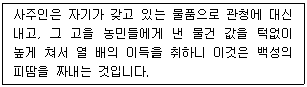
- 공법
- 대동법
- 균역법
- 영정법
(정답률: 90%)
9. 병자호란에 따른 조선의 실상에 관한 설명으로 옳지 않은 것은?
- 청에 대한 적대감과 복수심으로 북벌론을 주창하였다.
- 세자를 비롯해 많은 신하와 백성이 포로로 끌려갔다.
- 청나라에 바치는 조공품이 늘어나 백성들의 생활이 곤궁해졌다.
- 압록강 지역에 4군, 두만강 지역에 6진을 설치하였다.
(정답률: 92%)
10. 시기 순으로 사건을 바르게 나열한 것은?
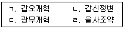
- ㄴ - ㄱ - ㄷ - ㄹ
- ㄴ - ㄷ - ㄱ - ㄹ
- ㄷ - ㄱ - ㄹ - ㄴ
- ㄷ - ㄴ - ㄱ - ㄹ
(정답률: 76%)
11. 다음 내용과 관련된 조선시대 기구로 옳지 않은 것은?
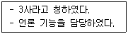
- 홍문관
- 승정원
- 사간원
- 사헌부
(정답률: 81%)
12. 조선 전기 문화에 관한 설명으로 옳은 것은?
- 판소리와 한글소설이 유행하는 등 서민문화가 확대되었다.
- 아라비아 역법을 참고하여 칠정산이라는 역법서를 편찬하였다.
- 동국지리지, 아방강역고 등과 같은 역사 지리서를 편찬하였다.
- 우리나라의 산천을 사실적으로 표현한 진경산수화가 유행하였다.
(정답률: 84%)
13. 일제가 청산리대첩의 보복으로 우리 동포를 학살한 사건은?
- 간도 참변
- 만보산 사건
- 자유시 참변
- 갑산 화전민 사건
(정답률: 86%)
14. 현재까지 남아있는 근대 문화유산으로 옳지 않은 것은?
- 독립문
- 명동성당
- 통감부 청사
- 덕수궁 중명전
(정답률: 94%)
15. 광복 후 김구의 활동으로 옳은 것은?
- 한국 민주당과 함께 남한만의 총선거 실시를 주장하였다.
- 김일성에게 남북 정치 지도자 회담을 제안하였다.
- 모스크바 3국 외상 회의에서 결정된 신탁통치안을 지지하였다.
- 새 국가 건설을 위해 조선 건국 동맹을 결성하였다.
(정답률: 89%)
2과목: 관광자원해설
16. 자연적 관광자원이 아닌 것은?
- 사적
- 온천
- 동굴
- 산악
(정답률: 86%)
17. 온천법상 ( )에 들어갈 용어로 옳은 것은?
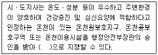
- 보양온천
- 관광온천
- 휴양온천
- 요양온천
(정답률: 69%)
18. 석회동굴을 모두 고른 것은?
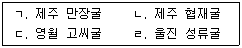
- ㄱ, ㄴ
- ㄱ, ㄹ
- ㄴ, ㄷ
- ㄷ, ㄹ
(정답률: 85%)
19. 우리나라 국립공원 중 면적이 가장 넓은 국립공원과 가장 좁은 국립공원을 순서대로 나열한 것은?
- 한려해상 국립공원, 월출산 국립공원
- 다도해해상 국립공원, 월출산 국립공원
- 한려해상 국립공원, 북한산 국립공원
- 다도해해상 국립공원, 북한산 국립공원
(정답률: 70%)
20. 다음에 설명하는 문화재는?
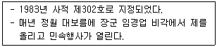
- 경주 양동마을
- 아산 외암마을
- 순천 낙안읍성
- 고성 왕곡마을
(정답률: 85%)
21. 조선왕조의궤에 관한 설명으로 옳지 않은 것은?
- 의궤(儀軌)란 의식(儀式)의 궤범(軌範)이라는 뜻이다.
- 왕실의 중요행사를 문자와 그림으로 정리한 국가기록물이다.
- 세종 때 최초로 편찬하여 일제강점기까지 계속 기록되어 있다.
- 조선왕조 의식의 변화뿐 아니라 동아시아 지역의 문화를 비교할 수 있는 사료이다.
(정답률: 91%)
22. 우리나라 전통도자기에 관한 설명으로 옳지 않은 것은?
- 도자기 종류에는 토기, 청자, 백자 등이 있다.
- 도자기에 문양을 만드는 기법에는 상감, 양각, 음각 등이 있다.
- 조선청자에는 백자 태토에 철분이 함유된 유약을 입힌 것도 있다.
- 고려청자는 몽고의 침입으로 청자 제작 기술이 더욱 발전되었다.
(정답률: 89%)
23. 우리나라 전통 건축물에 관한 설명으로 옳은 것은?
- 다포 양식은 공포(栱包)가 기둥 위에만 있다.
- 다포 양식의 목조 건물에는 숭례문, 경복궁 근정전이 있다.
- 주심포 양식의 목조 건물에는 화엄사 각황전, 통도사 대웅전이 있다.
- 주심포 양식은 공포를 기둥 위뿐 아니라 기둥 사이에도 설치하는 건축 양식이다.
(정답률: 76%)
24. 강릉단오제에 관한 설명으로 옳지 않은 것은?
- 음력 5월 15일 전후로 1주일간 개최된다.
- 다른 지역 단오제와 상이한 신화체계를 가지고 있다.
- 강릉관노가면극이 공연된다.
- 20⑤년 유네스코 인류무형문화유산으로 등재되었다.
(정답률: 81%)
25. 국가무형문화재가 아닌 것은?
- 고성농요
- 북청사자놀음
- 해녀
- 남도노동요
(정답률: 55%)
3과목: 관광법규
26. 관광기본법상 지방자치단체의 책무에 해당하는 것은?
- 관광에 관한 국가시책에 필요한 시책을 강구하여야 한다.
- 외국 관광객의 유치를 촉진하기 위하여 해외 홍보를 강화하고 출입국 절차를 개선하며 그 밖에 필요한 시책을 강구하여야 한다.
- 매년 관광진흥에 관한 시책과 동향에 대한 보고서를 정기국회가 시작하기 전까지 국회에 제출하여야 한다.
- 관광에 대한 국민의 이해를 촉구하여 건전한 국민관광을 발전시키는 데에 필요한 시책을 강구하여야 한다.
(정답률: 60%)
27. 관광진흥개발기금법령상 관광진흥개발기금의 대여 신청을 거부하거나 그 대여를 취소할 수 있는 사유에 해당하는 것을 모두 고른 것은?
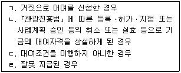
- ㄱ, ㄷ
- ㄱ, ㄴ, ㄹ
- ㄴ, ㄷ, ㄹ
- ㄱ, ㄴ, ㄷ, ㄹ
(정답률: 97%)
28. 국제회의산업 육성에 관한 법령상 국제회의 전담조직의 업무가 아닌 것은?
- 국제회의의 유치 및 개최 지원
- 국제회의산업의 국외 홍보
- 국제회의 관련 정보의 수집 및 배포
- 국제회의시설에 부과되는 부담금 징수
(정답률: 85%)
29. 관광진흥법령상 의료관광호텔업의 등록기준으로 옳지 않은 것은?
- 대지 및 건물의 소유권 또는 사용권을 확보하고 있을 것
- 객실별 면적이 15제곱미터 이상일 것
- 의료관광객의 출입이 편리한 체계를 갖추고 있을 것
- 의료관광객이 이용할 수 있는 취사시설이 객실별로 설치되어 있거나 층별로 공동취사장이 설치되어 있을 것
(정답률: 84%)
30. 관광진흥법령상 카지노사업자에게 금지되는 행위에 해당하지 않는 것은?
- 허가받은 전용영업장 외에서 영업을 하는 행위
- 「해외이주법」에 따른 해외이주자를 입장하게 하는 행위
- 19세 미만인 자를 입장시키는 행위
- 정당한 사유 없이 그 연도 안에 60일 이상 휴업하는 행위
(정답률: 97%)
31. 관광진흥법령상 유원시설업의 조건부 영업허가에 관한 설명으로 옳은 것은?
- 특별자치도지사ㆍ시장ㆍ군수ㆍ구청장은 5년의 범위에서 문화체육관광부령으로 정하는 시설 및 설비를 갖출 것을 조건으로 영업허가를 할 수 있다.
- 천재지변의 경우에는 해당 사업자의 신청에 따라 허가 조건에 해당하는 시설과 설비를 갖추어야 할 기간을 여러 차례 연장할 수 있다.
- 특별자치도지사ㆍ시장ㆍ군수ㆍ구청장은 조건부 영업허가를 받은 자가 정당한 사유 없이 정해진 기간 내에 허가 조건을 이행하지 아니한 경우라도 그 허가를 즉시 취소할 수는 없다.
- 조건부 영업허가를 받은 자는 허가 조건에 해당하는 필요한 시설 및 기구를 갖춘 경우 그 내용을 특별자치도지사ㆍ시장ㆍ군수ㆍ구청장에게 다시 허가받아야 한다.
(정답률: 30%)
32. 관광진흥법령상 한국관광협회중앙회의 업무 중 문화체육관광부장관의 허가를 받아야 하는 것은?
- 관광 통계
- 회원의 공제사업
- 국가나 지방자치단체로부터 위탁받은 업무
- 관광안내소의 운영
(정답률: 23%)
33. 관광진흥법령상 지역관광협의회(이하 "협의회"라 한다)의 설립에 관한 설명으로 옳지 않은 것은?
- 관광사업자, 관광 관련 사업자, 관광 관련 단체, 주민 등은 공동으로 광역 및 기초 지방자치단체 단위의 협의회를 설립할 수 있다.
- 협의회를 설립하려는 자는 해당 지방자치단체의 장의 허가를 받아야 한다.
- 협의회는 지역관광 홍보 및 마케팅 지원 업무에 따르는 수익사업을 수행할 수 없다.
- 협의회의 설립 및 지원 등에 필요한 사항은 해당 지방자치단체의 조례로 정한다.
(정답률: 72%)
34. 관광진흥법령상 관광특구에 관한 설명으로 옳지 않은 것은?
- 관광특구는 시장ㆍ군수ㆍ구청장의 신청(특별자치도의 경우는 제외한다)에 따라 시ㆍ도지사가 지정한다.
- 특별자치도지사ㆍ시장ㆍ군수ㆍ구청장은 관할 구역 내 관광특구를 방문하는 외국인 관광객의 유치 촉진 등을 위하여 관광특구진흥계획을 수립하고 시행하여야 한다.
- 관광특구로 지정하기 위해서는 최근 1년간 외국인 관광객 수가 5만명 이상이어야 한다.
- 관광특구 안에서는「식품위생법」제43조에 따른 영업제한에 관한 규정을 적용하지 아니한다.
(정답률: 80%)
35. 관광진흥법령상 1년 이하의 징역 또는 1천만원 이하의 벌금에 처하는 경우가 아닌 것은?
- 허가받은 사항에 대해 유원시설업의 변경허가를 받지 아니하고 영업을 한 자
- 유기시설로 인하여 사망자가 발생하였음에도 이를 특별자치도지사ㆍ시장ㆍ군수ㆍ구청장에게 통보하지 아니한 유원시설업자
- 안전성검사를 받지 아니하고 안전성검사 대상 유기시설을 설치한 자
- 신고를 하지 아니하고 기타유원시설업의 영업을 한 자
(정답률: 37%)
4과목: 관광학개론
36. 우리나라 국립공원으로 지정되지 않은 것은?
- 칠갑산
- 태백산
- 월악산
- 무등산
(정답률: 90%)
37. 중국이 처음으로 우리나라 제1위의 입국자 수를 기록한 연도는?
- 2011년
- 2012년
- 2013년
- 2014년
(정답률: 48%)
38. 제3차 관광개발기본계획(2012~2021)의 광역 관광권 개발 추진 전략으로 옳지 않은 것은?
- 수도관광권 - 미래를 선도하는 동북아 관광허브
- 충청관광권 - 3대 문화ㆍ역사관광의 거점
- 호남관광권 - 아시아를 대표하는 문화관광 중추지역
- 부ㆍ울ㆍ경관광권 - 해양레저ㆍ크루즈관광 중추지역
(정답률: 75%)
39. 2017년 기준 호텔업 등급 결정사업에 관한 설명으로 옳지 않은 것은?
- 호텔산업 질적 성장을 위해 실시한다.
- 호텔업 등급평가 대상은 4년마다 등급평가를 받아야 한다.
- 등급결정업무는 한국관광공사가 수탁ㆍ수행한다.
- '별' 등급체계를 사용한다.
(정답률: 82%)
40. 우리나라 카지노업에 관한 설명으로 옳지 않은 것은?
- 1967년 인천 소재 올림포스 호텔이 카지노를 최초로 개설하였다.
- 2016년 12월 기준, 전국 카지노 업체별 입장객은 강원랜드가 가장 많다.
- 2000년 10월 개관한 강원랜드는「폐광지역개발지원에관한특별법」에 의거 한시적으로 내국인 출입이 허용되고 있다.
- 1994년 8월 이후, 전국의 카지노 사업 허가권, 지도ㆍ감독권은 경찰청에서 가지고 있다.
(정답률: 44%)
41. 우리나라 컨벤션센터와 소재지 연결이 옳지 않은 것은?
- DCC - 대구
- CECO - 창원
- BEXCO - 부산
- HICO - 경주
(정답률: 74%)
42. 우리나라 저비용 항공사의 IATA와 ICAO 기준 코드로 옳은 것은? (순서대로 IATA, ICAO)
- 이스타 : ZE, ESR
- 진에어 : JL, JJA
- 에어부산 : BR, ABL
- 제주항공 : LJ, JNA
(정답률: 54%)
43. 관광종사원 국가자격시험으로 옳지 않은 것은?
- 국내여행안내사
- 호텔서비스사
- 컨벤션기획사
- 호텔경영사
(정답률: 94%)
44. 대안 관광(Alternative Tourism)의 형태로 옳지 않은 것은?
- 생태관광(Eco Tourism)
- 녹색관광(Green Tourism)
- 연성관광(Soft Tourism)
- 대중관광(Mass Tourism)
(정답률: 93%)
45. 기능적 관광매체가 아닌 것은?
- 관광선전
- 관광통역안내업
- 관광지
- 관광정보
(정답률: 92%)
46. 관광사업의 특성이 아닌 것은?
- 복합성
- 비민감성
- 공익성
- 서비스성
(정답률: 92%)
47. 정량적인 관광 수요 예측방법으로 옳지 않은 것은?
- 회귀분석법
- 시계열분석법
- 델파이기법
- 중력모형
(정답률: 72%)
48. 국제관광기구의 약어에 대한 표기로 옳지 않은 것은?
- UNWTO - 세계관광기구
- PATA - 아시아ㆍ태평양 관광협회
- ASTA - 미주여행업협회
- APEC - 세계여행관광협의회
(정답률: 94%)
49. 국제관광의 긍정적인 효과로 옳지 않은 것은?
- 세계평화에 기여
- 국민경제적 향상효과
- 고용창출 및 증대효과
- 일탈행동의 증가
(정답률: 87%)
50. 관광마케팅의 발전 과정으로 옳은 것은?
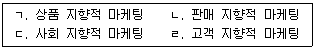
- ㄱ - ㄴ - ㄷ - ㄹ
- ㄱ - ㄴ - ㄹ - ㄷ
- ㄷ - ㄱ - ㄴ - ㄹ
- ㄷ - ㄴ - ㄹ – ㄱ
(정답률: 41%)